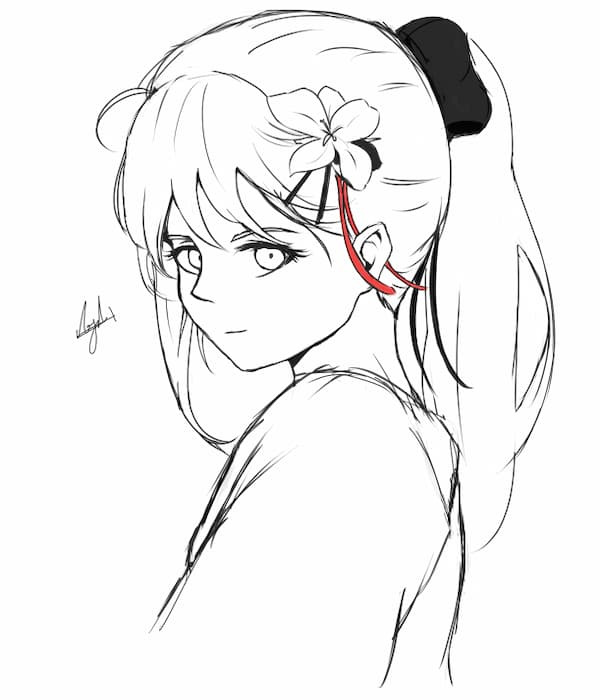
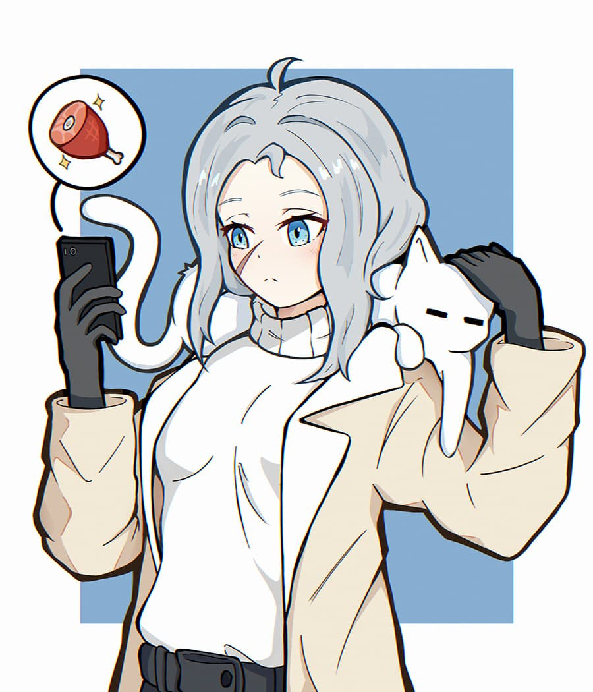
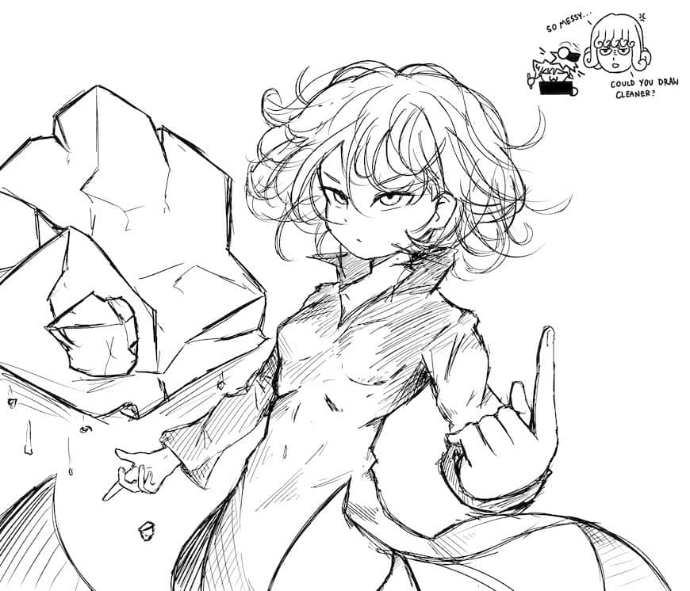
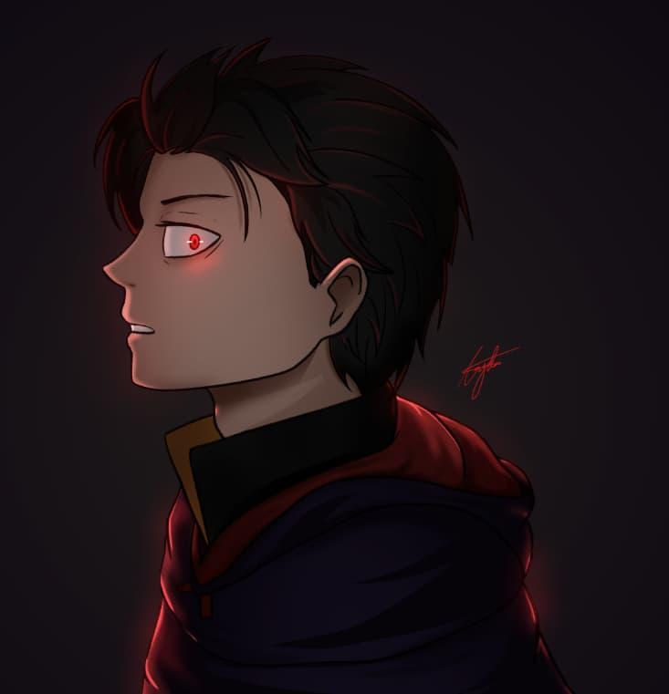

As you can soon probably tell, I don't really like coloring, never spent the time to get good at it. So most my art just ends up in the
sketching / lineart phase.
I'd usually only push through and commit to coloring when it's an important piece
(secret santas mainly).



